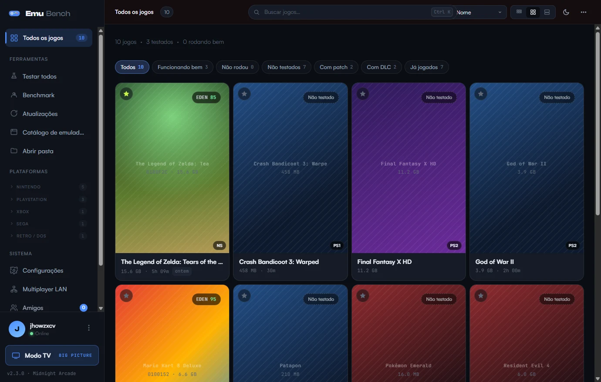
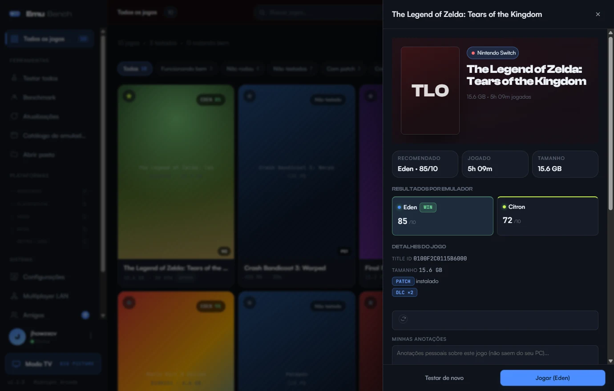
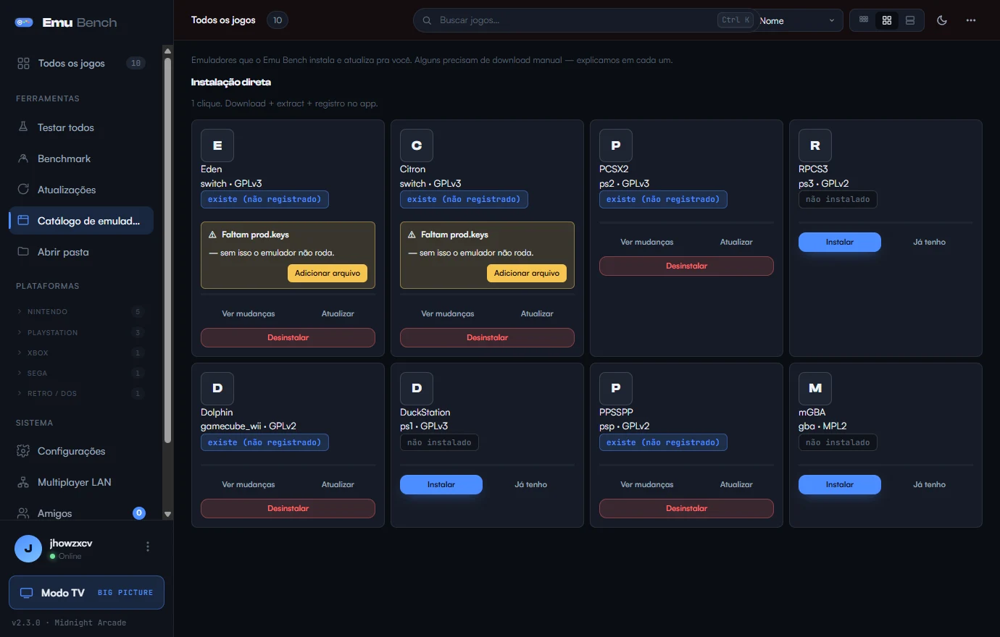
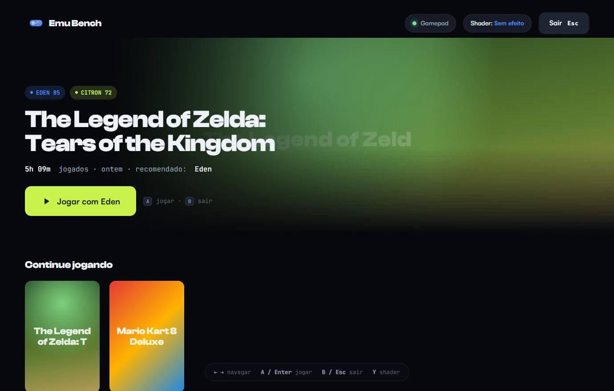
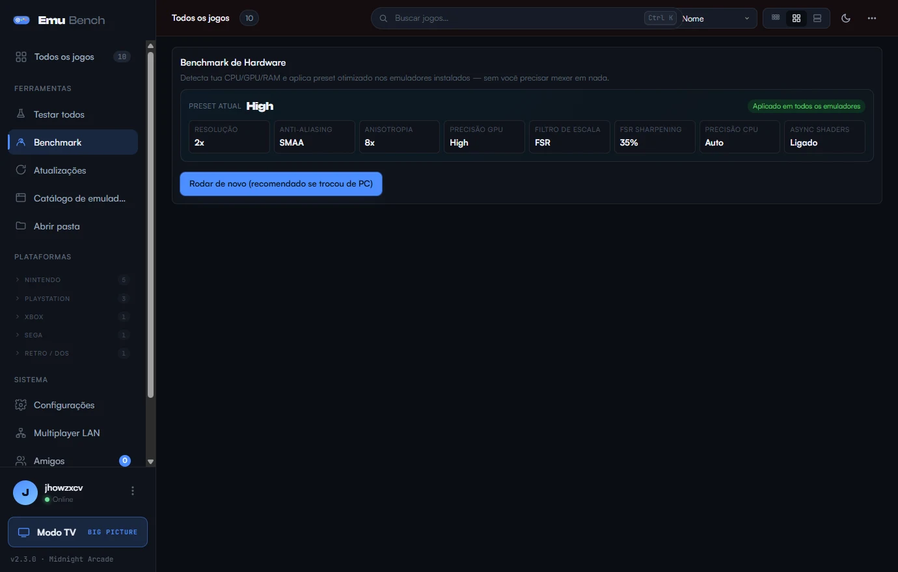

App desktop · Windows · grátis & open-source
Sua central de emulação.
Testa, compara, organiza e atualiza seus jogos em 22+ emuladores de 18+ consoles — numa única biblioteca, com cara de produto premium.
22+
emuladores suportados
18+
consoles, do PS1 ao Switch
100%
grátis, sem pegadinha
GPLv3
open-source no GitHub
Recursos
Tudo o que falta num gerenciador de emulação
Pensado pra quem leva retrogaming a sério — denso em informação, mas calmo e organizado.
Telas
Uma central de comando escura e cinematográfica

Biblioteca · grid de capas
Teste 0–10
Catálogo de emuladores
Modo TV · Big Picture
Benchmark · preset automático Como começar
Pronto em três passos
01
Baixar
Pegue o instalador pra Windows aqui no site. Leve, sem dependências externas pesadas.
02
Instalar
Abra e siga o wizard de primeira execução — health check e dependências em poucos cliques.
03
Apontar a pasta
Indique a pasta dos seus jogos. O Emu Bench organiza por console e busca as capas automaticamente.
Download
Comece a testar seus jogos hoje
Grátis, open-source, sem conta obrigatória. Baixe e rode.
Baixar Emu Bench para Windows